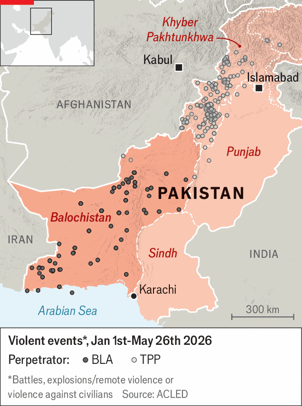

Pakistan is battling two insurgencies
Problems mount at home as its leader plays peacemaker abroad
June 4th 2026

TROUBLE AT HOME is bringing Asim Munir, Pakistan’s military chief and de facto ruler, down to earth with a thump. Lately he has been playing the globe-trotting peacemaker. On May 22nd he was in Tehran, Iran’s capital, for a second time in two months—visiting in an effort to help stop the conflict between America and Iran. Three days later he was in Beijing updating China’s president, Xi Jinping.
Yet Field Marshal Munir’s arrival in China was marred by grim news at home. In Balochistan, a vast state in western Pakistan, a separatist group had blown up a commuter train, killing 47 people. The attack was mounted by the Balochistan Liberation Army (BLA), which has also targeted Chinese infrastructure and people. The latest strike may have even been timed to humiliate the field marshal in Beijing. To compound his troubles, the BLA’s campaign is only one of two insurgencies racking Pakistan. As he seeks to project strength abroad, militant violence in his country is the worst it has been in a decade (see chart).

The train-bombing was the most daring in a series of attacks that the BLA, thought to have around 2,000 fighters, has carried out this year (the aftermath of an attack in 2025 is pictured). As well as murdering Pakistanis, the group has killed at least 20 Chinese nationals in the past five years, during attacks on energy and minerals projects that aim to discourage Chinese investment and embarrass the Pakistani government. “We promised [China] security and we failed,” says Mushahid Hussain, a retired senator and chairman of the Pakistan-China Institute, a think-tank in Islamabad, Pakistan’s capital.
Though its campaign is execrable, the BLA is probably a lesser worry for officials in Islamabad than a second set of adversaries: the Tehreek-e-Taliban Pakistan (TTP). Its 6,000 or so fighters dream of establishing their own godly emirate in north-western Pakistan. In slick videos on social media, available in Urdu, Pashto and English, fighters rail against the Pakistani state for being un-Islamic and enslaved by the IMF. A car-bomb that killed 21 police in a north-western province was just one of several attacks they carried out in May.
The TTP was once poor and ill-disciplined. In the 2010s the group relied on press-ganging penniless youths. Its violence was indiscriminate: in 2014 it attacked a school in Peshawar in Pakistan, killing 132 children. These days it is better organised and financed, and only targets Pakistani soldiers and police. Lieutenant General Tariq Khan, who led counter-insurgency campaigns before retiring from the Pakistan army in 2014, says it pays jobless youngsters 50,000 rupees ($180) a month. “They get money, food, uniform and recognition; it’s a very attractive kind of thing.” It has snipers, thermal goggles and Chinese-made drones, says Ihsanullah Tipu Mehsud, a Pakistani analyst.

Pakistan has long accused the Afghan Taliban of sheltering and supporting the TTP. Fed up, it declared “open war” on Afghanistan in February, bombing training camps and munitions dumps. It had already been expelling Afghan refugees, and since October has blocked trade across the two countries’ border—depriving the Taliban of revenues worth around $300m per year, almost 10% of its annual budget. Pakistan has been hoping to press the Taliban to disarm the TTP or stop fighters crossing their shared frontier.
That is wishful thinking. TTP activity fell straight after Pakistan’s military strikes, but has picked up in the past month. The Taliban’s dominant factions see the TTP as kindred spirits; in the past they have waged jihad together. They also worry that efforts to disarm the TTP could cause fighters to flock to militant groups that are even more extreme, some of which oppose the Taliban. Thus the main effect of Pakistan’s strikes on Afghanistan has been to unite the Taliban—and enrage ordinary Afghans. The UN says 372 Afghan civilians had been killed by Pakistani bombs by the end of March. Thousands more have been displaced. Delawar Khan, a 31-year-old man from the Nari district of Kunar Province, says his family and many others were forced to flee. Finding food and water became difficult.
Pakistan has long claimed that India finances the BLA. These days officials also allege that it has been pumping money into Afghanistan, and even indirectly paying the salaries of TTP fighters. India denies this. It has certainly got friendlier with the Taliban in recent years, and both Pakistan and India have long histories of working through proxies. Yet governments often find it easy to blame foreign meddling for insurgencies caused by domestic grievances, says Adam Weinstein of the Quincy Institute, an American think-tank.
Western Pakistan, where both the BLA and TTP operate, has been left behind economically and exposed to decades of harsh treatment by the army and the police. Field Marshal Munir’s brute-force approach to the insurgencies has left little space for political conciliation. “It will have hugely negative repercussions,” says a former Pakistani diplomat.
In April Pakistan took part in low-level talks with the Taliban, at China’s request. They ended without progress. Pakistan’s response to the latest attacks has been restrained—perhaps because Field Marshal Munir hopes to host more talks between America and Iran, and does not want domestic trouble to mess that up. But what comes next is unclear. Some in Kabul, Afghanistan’s capital, are worried that Pakistan might somehow try to force regime change. Asked if Pakistan would consider targeting not just training camps but Taliban leaders, one Pakistani official looks exasperated. “If they don’t stop killing us.” ■
For exclusive coverage of Asian politics, economics and security, sign up to Asia Bulletin, our weekly subscriber-only newsletter.